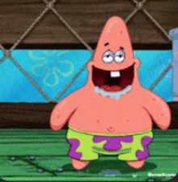
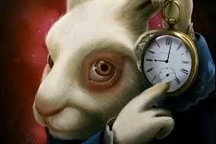
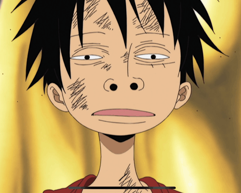

One Piece
The biggest treasure in the world
You may have heard about One Piece unless you live under a rock. 
Nobody knows what the One Piece actually is. Not the fans, not the characters, not even most of the people searching for it.
All that's known is that Gol D. Roger, the Pirate King, left it somewhere in the world before his execution — and that it's real, because he said so with his last breath.
Is it gold? A weapon? The answer to some ancient secret that the World Government has been desperately trying to bury for centuries?
Twenty-seven years of manga and Oda still hasn't shown it.
And somehow, that makes you want it more.
Okay, but why should i care?
One Piece is not really about pirates. It's about a group of broken, lonely people who find each other and become a family. It's about chasing a dream so hard that the whole world tries to stop you, and going anyway. Every single member of the Straw Hats carries a wound — a lost home, a broken promise, a dream everyone told them was impossible. And yet they sail forward. One Piece has made millions of people laugh, sob, and fist-pump at their screens, not because of sword fights or devil fruits, but because it understands something deeply human: the people beside you are worth more than any treasure.
It doesn't get me hooked
Not even the best storyteller can explain a story that huge in one chapter, and nothing is going to get you hooked if you dont even let the story take its footing. Watch it until the "Arlong Park" (Episodes 31-44 in the anime, Chapters 65-95 in the manga)
Common Objections
- "It's too long" You watch TV shows. You've spent more hours on worse things like scrolling on your phone. One Piece is long because the world is enormous and Oda respects it enough to explore all of it.
- "I'll wait until it is finished

" At that time everyone will know what the "One Piece" is. - "Anime isn't my thing" If you don't like watching it in Japanese and reading subtitles, there are the dubs to English/Spanish. Don't like the animation? Read the manga. But yeah, the animation in the anime sometimes is slow. Anyways, there's also a good Live Action version in Netflix if u want to check it out.
So...
Just give it a try, hod do you know you don't like something if you never try it?
